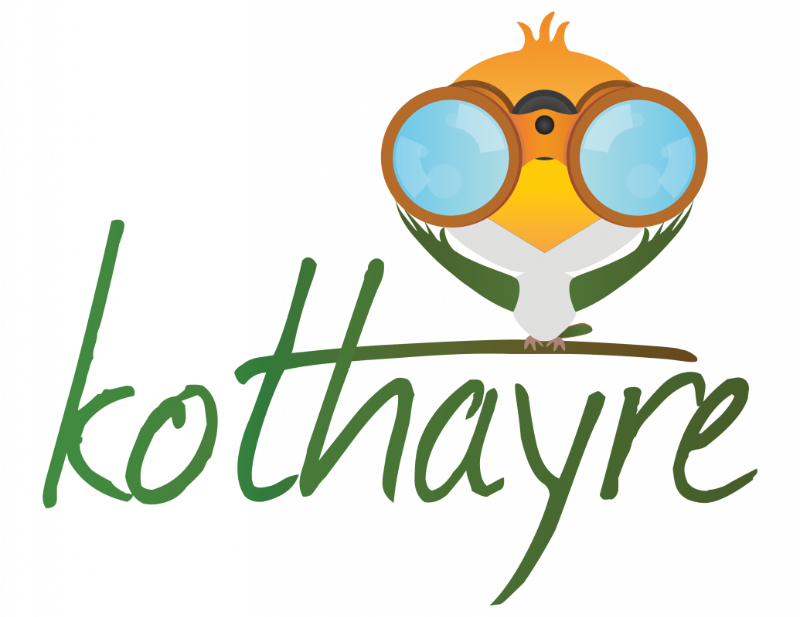
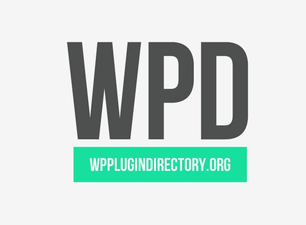
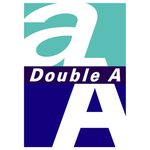
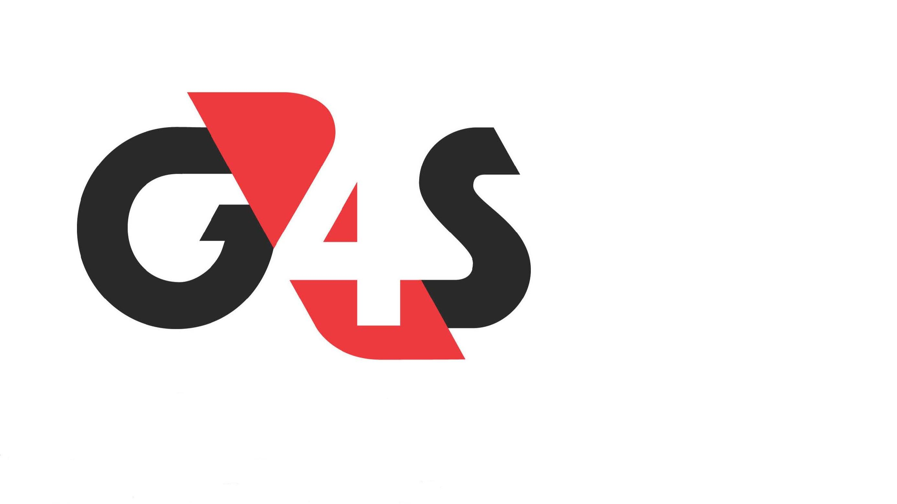

Work Experience
-
Digital Marketing Manager – Kothayre.com - March 2018 to Present
- Develops, implements and optimizes digital, internet, mobile and online marketing, SEO projects/campaigns across platforms)
- Serves as a liaison with outside agencies and maintain network of key contacts while leading a team of digital marketers to meet target
- Develops, implements and optimizes digital, internet, mobile and online marketing, SEO projects/campaigns across platforms)
- Responsible for monitoring, integration, analyzing and optimizing digital, mobile or online marketing campaign performance
- Ensures collaterals are produced & scheduled according to the digital marketing plan with guidelines
-
WhiteSpot Digital - Digital Strategist – May 2, 2017 to February, 2018

- Develop & manage clients’ web development/software projects
- Develop/manage digital strategies for clients
- Support digital marketing team across multiple projects
- Plan SEO, SMS, Email, social Media & Advertising Campaigns
- Create, manage & report to clients regarding Ad campaigns
-
Founder - Asphalt Themes – Dec 2015 to Present

- Develop themes, plugins & provide support
- Plan, write and coordinate content marketing
- Manage Ads / Blogger outreach programs
- Develop product marketing strategy
-
Co-Founder - wpplugindirectory.org - Mar 22, 2014 – 2017
- Growth Hacking
- Manage Social Channels
- Manage Outreach programs
- Manage content calendar
- Manage website & contents
- Identify proper channels
- Build partnership with top bloggers
- Oversee Web Analytics
-
Double A Pulp & Paper Bangladesh Ltd - Channel Development Executive - May 2, 2013 – Jun, 2017
- Develop Coordinate & Evaluate distributors/dealers for channel targets
- Prepare & present sales forecast and report to higher management, advice on market strategies
- Monitor marketing/sale promotions to achieve its target, handling customer issues and follow up
- Key Achievements –Channel Mapping, Assisted in establishing Quality Paper Mill operation, Quality Paper Mill Limited (June 1, 2013 –September 30, 2013)
- Develop & coordinate sales plan for QPM LTD
-
G4S Security Services Bangladesh (P) Ltd - Deputy Assistant Manager - Aug 1, 2012 – Dec, 2012
- Management of security 500+ security personnel and facilitate training
- Facilitating, Negotiating, Handling with customers for smooth operations
- Guide, motivate and monitor security personnel to maintain SOP
- Key Achievements - Successfully managed 30+ clients with 500+ security personnel
-
Robi Axiata Limited - Intern (CSR Department) - Jan 22, 2012 – Apr, 2012

- Worked on CSR projects & assist managing agency partners
- Assist in PR related issues, survey, eventmanagement, proposal, documentation of CSR projects
- Proposal writing, creating presentation, writing reports, communicating vendors, overseeing events
Skills & Work Tools
- Programming Skills: HTML/HTML5, CSS/CSS3 (SASS, Bootstrap, BEM), WordPress, PHP, MySQL, JavaScript (jQuery, Gulp, Webpack, Vue JS, Node JS), Chrome & Firefox Dev Tools, GitHub, Bitbucket, SVN, PSD to HTML to WordPress
- Others Skills: SEO, Photoshop (PSD to HTML), Content Marketing, Blogging, Agile
- Typing speed(English): 60[WPM Average], Bangla 30 WPM
- Language Skills: Bangla, English and Hindi & Basic Spanish
- Project Tools: Trello, Slack, Basecamp, Google Office Suite , Feedly, Pencil, MailChimp
- Programming Tools: Koala, Wamp, Poedit, Sublime Text, Visual Studio Code, GitHub, BitBucket, Markdown
- SEO Tools: SEO Quake, Mozbar, Google analytics, Webmaster Tool, UTM Parameter, Keyword planner, KWfinder, Portent, CoSchedule headline analyzer, SEO Yoast, SEM Rush Rank, Backlinko
- Social Tools: Messenger Bot, Buffer, Hootsuite, Facebook pixel, Followerwonk, Bit.ly, Buzzsumo, Crowdfire
Education
- BRAC University, 2011● Bachelor of Business Administration, concentration in Marketing & Human resource ● GPA -3.18
- Notre Dame College, 2006 ● H.S.C, concentration in Humanities ● GPA -4.4 out of 5
- Motijheel Model High School & College, 2004 ● S.S.C, concentration in Humanities ● GPA -4.5 out of 5
Extra Curriculam Activities
- Worked as Joint secretary of Entrepreneur Development Forum [EDF], Summer 09- Fall 09
- Worked as “Grass Cutter” during social day of residential semester in TARC [Summer 2008]
- Member of Notre Dame Adventure Club[August 2004 - January2006]
- Anchored Seminar [June 27 2009], Workshop [“History of an Entrepreneur” July 2009]
- Participated in Inter-Dorm Debate & cricket competition[Summer 2008]
- Organized Club fair *“Dugdugi” 10th October fall 09], TARC summer 08 reunion [10th June, 2011]
- Organized Seminar with the owner of Azad products * “History of an Entrepreneur” July 2009 +
- Worked as an Executive member of Bizbee club of BRACU, Summer 09
- Participated in Biz Maestro program of Unilever [September 2011]
- Organized one-day tour in Comilla[17th July 2009] and in Habiganj [4th December 2009]
- Participated in BRACU underground football tournament [ July 2010, 25th-27th November 2010 ]
- Participated in BRACU Inter-semester football tournament [Spring 2011, Spring 2012]
- Organized Bangladesh Unreal Tournament(summer ‘08) & in house/national gaming events
Voluntary Activities
- Volunteered in BRAC’s 35th anniversary in Army Stadium [15th February 2008]
- Volunteered in “The Interview” fall ’09 on 19th November 2009.
Award, Achivements & Certifications
- Received Dean Certificate for outstanding Academic result in spring 2011 semester
- Member of inter-semester football tournament champion team [Spring 2012]
- “Content Marketing” Certified by Hubspot Academy
- “Google Analytics for Beginners” Certified by Google Analytics Academy - Valid til March 12, 2020